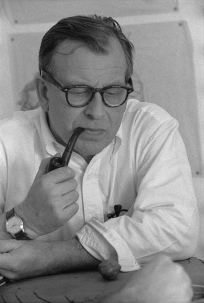

“Il est vrai qu'un espace se doit d'être actualisé afin de refléter l'esprit de son temps.”
Eero Saarinen
Eero Saarinen est un architecte et designer américain d'origine finlandaise né le 20 août 1910 à Kirkkonummi et mort le
1ᵉʳ septembre 1961 à Ann Arbor. Fils d'Eliel Saarinen, architecte finlandais réputé, il émigre avec sa famille alors
qu'il est adolescent.
Pour avoir reçu le second prix d'un concours d'architecture pour imaginer le nouveau siège du Chicago Tribune en 1922,
Eliel Saarinen est encensé par la critique. Alors en 1923, les Saarinen partent aux États-Unis. Ils s'installent à Ann
Arbor puis à Bloomfield Hills près de Détroit dans le Michigan. Son père devient le premier président de la Cranbrook
Educational Community,. De 1930 à 1931, Eero Saarinen étudie la sculpture à l'Académie de la Grande Chaumière de Paris.

L'un de ses premiers projets architecturaux est la salle de concert et de théâtre de Tanglewood à Lenox dans le
Massachusetts, résidence d'été de l'Orchestre symphonique de Boston. Projet au long cours, l'aménagement du site
mobilise l'agence familiale à plusieurs reprises au cours de l'histoire.